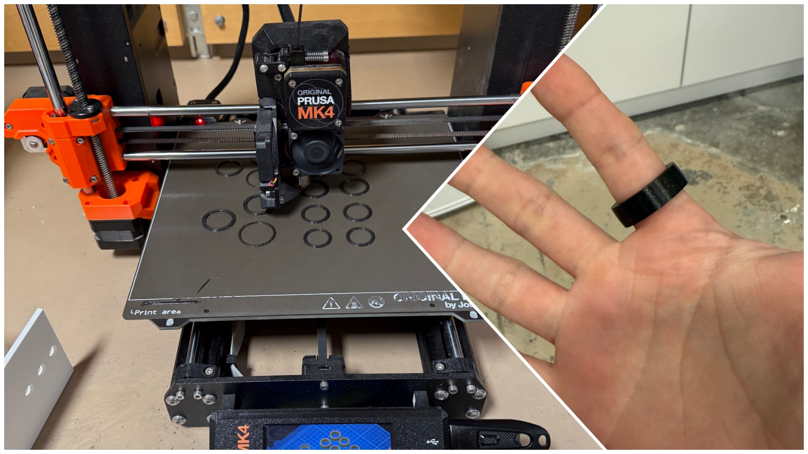
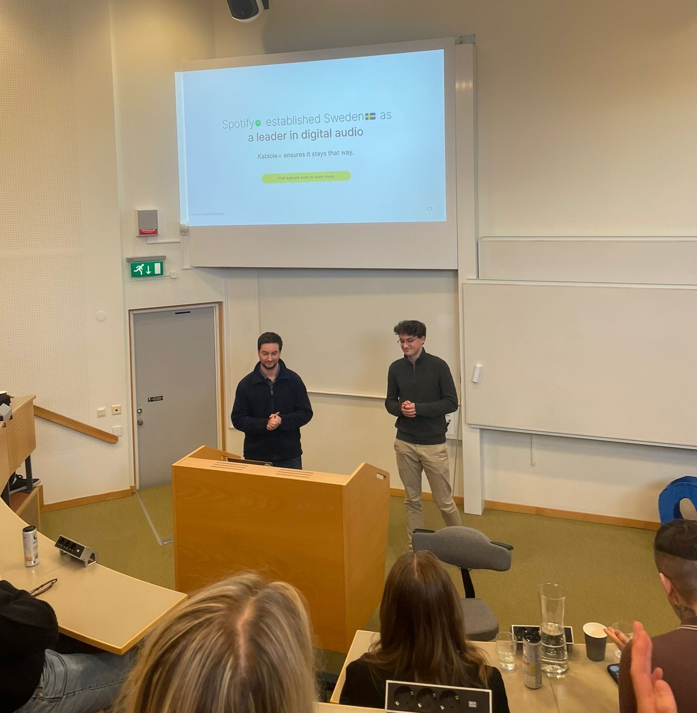

Kabloie is a Technology and Design Company.
It was started last year by Antonio and Tobías, two master students at Lund University in Sweden.
Right now we are building a short-form audio app, and a smart ring with a touch sensor on it.
Here's a demo of how they work together:
As of writing, we're finalizing an Alpha version of the app in order to start onboarding testers. The design and infrastructure is more or less in place, we're now putting it all together.
For the ring, we have designed functional concepts and 3D printed some rings for ergonomic testing. Next we're going to start designing more functional prototypes.
3D printing the first batch of test rings.
Presenting Kabloie at a Lund University pitching event.
If this sounds cool and you'd like to be an early tester, or if you have thoughts, questions, or just want to follow along, let us know you're interested.
/ Tobías and Antonio
12 April 2025